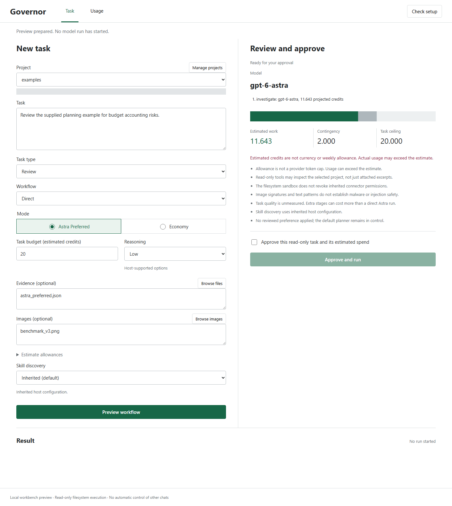

27 workflows, including 20 matched task/arm runs. All stages counted; cache use recorded.

Open source / Public beta 0.4.0rc5
Premium Model
Budget Governor
Keep Astra in the work.
Keep the budget in view.
Preview the workflow. Approve the estimate. Inspect the receipt. A local workbench for deliberate premium-model use.
Inside the workbench
Your task. Your model. Your approval.
Development captures, not a live session.
No model calls or account connection.
Start with Astra. Review the selected evidence and estimated spend before authorizing a read-only task.
Captures show preview states, not proof of savings. Extra stages can cost more. Reduced skill discovery can omit useful guidance.
LOCAL WORKBENCH01 / Direct preview

Example project / Preview only / Scroll capture or open full image
01 / Live demo
What fits your task budget?
Illustrative whole-workflow estimates. No model calls, account connection, or live billing.
Conserve mode
Selected workflow
Astra direct
Decision
Estimate pending
Why
Compare complete workflows including verification and contingency.
Astra stages planned0
Context actionCompress
Approval gateRequired
Total workflow estimatePending
Includes a 0.5-credit contingency and verification. No cache savings assumed. Quality scores are illustrative, not measured predictions.
02 / How it works
Four moves. One governed loop.
- 01
Measure
Count host input as well as task context. Missing usage stays unknown.
- 02
Plan
Compare direct Astra and complete hybrid workflows under one budget.
- 03
Execute
Reserve a bounded call. Astra can investigate, originate, and solve.
- 04
Reconcile
Record counters, verify outcomes, then decide whether another call helps.
03 / Origin
One allowance gone.
The next already running low.
During Astra-heavy Codex work, one weekly allowance was consumed in roughly a day. After a reset, the replacement allowance was again down to 16% by the next day, and later reached 11% during this launch.
That experience raised a question about repeated context, oversized evidence, and unnecessary handoffs. The account readings alone could not isolate the cause. The goal became:
How can we use as much of Astra’s capability as possible while keeping workflow burn closer to Sol?
These are the creator’s observed account-capacity readings, not a universal provider benchmark.
Idea, research guidance & product management: Sulabh Dubey
- Sulabh Dubey · Originator and product lead
- Lived problem, core idea, research guidance, product requirements, priorities, edge cases, approvals, and real-project proof-test direction.
- Codex by OpenAI · Research and build collaborator
- Research synthesis, architecture, policy engine, CLI, MCP server, Codex plugin, security scanners, evals, documentation, visual design, implementation, testing, and release execution.
Independent open-source project. Not an OpenAI product and not endorsed by OpenAI.
04 / Proof
Choose the workflow, not a fixed winner.
Five task families across four workflows: extra handoffs usually cost more than direct Astra. A smaller skill catalog reduced estimated cost on one repeated visual task, but may omit useful guidance. Codex-graded pilot results do not prove broad quality equivalence or weekly savings.
Read the results and limitations Earlier experimentsMean estimated credits on one visual task, four calls, no cache hits. Not a guarantee; skill discovery may be reduced.
05 / Included
A measured control layer.
CLI, Python library, MCP server, and a ready Codex plugin.
- 01Astra-preferred planner
Plan substantive Astra work without a mandatory Sol-first detour.
- 02Whole-task budget
Include host overhead, workers, retries, verification, and contingency.
- 03Evidence safety checks
Heuristic secret and injection checks. Not a malware or security guarantee.
- 04Capsules and evidence graphs
Give frontier models compact claims, files, tests, risks, and decisions.
- 05Governed CLI execution
Explicit read-only Codex calls with serial reservations and replay protection.
- 06Measured experiment ledger
Compare matched outcomes without inventing missing costs or learned probabilities.
06 / Install
Make your next task a measured one.
Python 3.10+ · Apache-2.0 · Direct-run workbench
Download the installer and wheel into one folder. Run the preview there; add --yes only after reviewing it.
Initial setup uses a terminal. Optional MCP dependencies require a download. Tasks are read-only; direct Astra is the default and extra stages can cost more. Broad savings and unaided onboarding are not yet proven.
python install_governor.py install --wheel premium_model_budget_governor-0.4.0rc5-py3-none-any.whl
Build the evidence with us
Useful feedback beats a perfect demo.
Technical or nontechnical: try the setup, bring a small non-sensitive task, and tell us where it helps or gets in the way. Independent testing is welcome. No endorsement expected.
Report your beta experienceNever share private prompts, project files, credentials, or local session links.